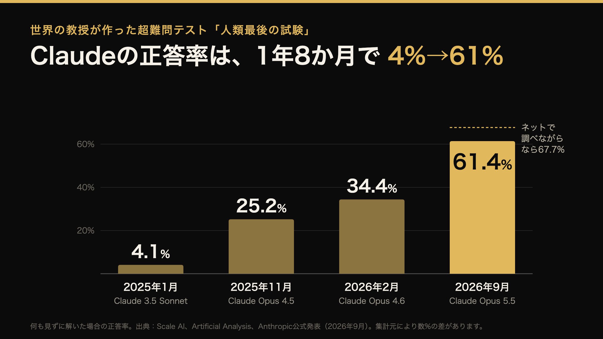

毎日、事務の仕事をClaudeに手伝ってもらっています。使い始める前に聞いたのが「Claudeってハーバード主席レベルらしいよ」という話でした。
本当なのか、気になって調べてみました。結論から言うと、Anthropic（Claudeを作っている会社）が公式にそう言っているわけではありません。でも、あながち大げさでもない数字が出てきました。
「人類最後の試験」という超難問テスト
AIの賢さを測るテストに、「人類最後の試験」というものがあります。世界50か国、約1,000人の大学教授や研究者が「これならAIには解けないだろう」という問題を出し合って作った、2,500問の試験です。分野は100以上。
公開されている例題は、こんな感じです。
例題1 生き物
- ハチドリの体の中にある小さな骨は、何対の腱（すじ）を支えているか。数字で答えなさい。
例題2 古代の言葉
- 古代ローマ時代のお墓に刻まれた、古代シリアの文字（パルミラ文字）を訳しなさい。
1問目は鳥の体の専門家でないと無理ですし、2問目は古代文字の研究者でないと手が出ません。こういう問題が、あらゆる分野から出ます。どんな天才でも、自分の専門以外はほとんど解けない試験です。
1年8か月で、4%→61%
おもしろいのは、点数の伸び方です。

試験ができた2025年1月、Claudeの点数はわずか4%。100問中4問しか解けませんでした。当時いちばん成績のよかったAIでも8%です。
それが2026年9月には約6割。1年8か月で15倍です。ネットで調べながら解いてよいルールなら、約7割に届きます。
残りの4割は、なぜ解けないのか
ここまで来ても、まだ全部は解けません。理由は大きく3つあるそうです。
- どこにも載っていない知識が要る ネットにも本にもほとんど書かれていない、ごく狭い専門の知識
- 写真や図の細かい読み取り かすれた石の文字のような画像を、正確に読むのはまだ苦手
- 長い推理の途中でつまずく 10段階の計算のうち1か所でも間違えると、答えは外れる
それから、問題のほうが間違っているかもしれない、という話もありました。化学と生物の問題のうち約3割は「正解とされている答え自体があやしい」と、外部の研究者が指摘しています。教授が作った問題でも完璧ではないので、100点はそもそも取れないのかもしれません。
でも、一緒に働くと「主席で入った新入社員」
テストでは主席級。では毎日一緒に働いてどうかというと、いちばん近いのは「主席で入った新入社員」だと思っています。
- 税金や契約、印刷の入稿ルールのような一般知識は、私よりずっと詳しい
- 何百行もあるExcelを数分で照らし合わせて、合わない1行を見つけてくる
- でも「この取引先はこう呼ぶ」「この人の分は毎月確認が要る」といった、うちだけのルールは教えないと知らない
そのかわり、一度教えたことはメモに残して、次からちゃんと守ってくれます。ここが、ふつうの道具と違うところです。
反対に、まだ人がやるべきだと感じるところもあります。社外の方へのメールの下書きで、まだお願いしていないことを「ご依頼しております」と書いてきたことがありました。言葉はとても上手。でも、相手との関係や「まだ言っていないこと」までは分かりません。送る前に読むのは、人の仕事です。
まとめ
- 教授たちの超難問テストで、Claudeの正答率は1年8か月で4%→約6割（調べながらなら約7割）
- 「ハーバード主席」は公式の言い方ではないけれど、頭のよさだけなら大げさではない
- 一緒に働くと「主席で入った新入社員」。うちのルールは教える、送る前は人が読む
1年8か月前は100問中4問だったものが、いまは6割。この先1年で、どこまで行くのか。毎日使っている身としては、楽しみでもあり、ちょっとこわくもあります。